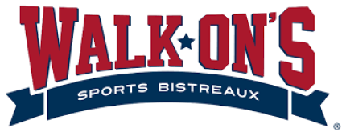
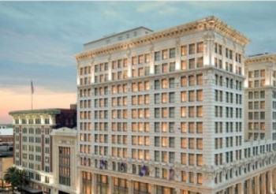
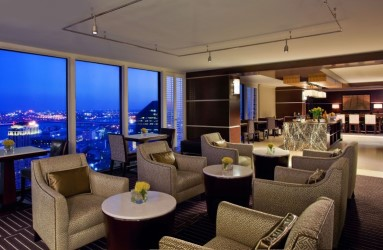
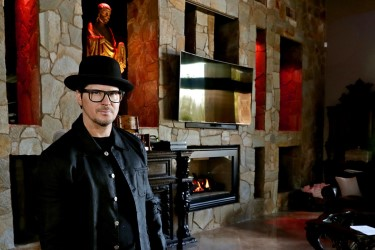

Premium Parking was founded in 2005 in New Orleans to disrupt the parking industry. We developed an easier to use and manage parking system powered by software, to help us deliver on our goal of a superior, customer-focused user experience. Premium’s GLIDEPARCS® gateless cloud-based parking management platform delivers customized industry solutions for office, retail, residential, mixed-use, healthcare, campus and beyond.
There’s really no better way to describe the uniqueness of Walk-On’s Sports Bistreaux. We start every dish from scratch and use fresh ingredients to bring our mouthwatering, Cajun cuisine to life. And whether you’re here for dinner with the family, date night, cocktails with the girls or to watch a game on the big screen, we’re always happy to share our Louisiana culture with you.
Rich in history and personality, New Orleans is unlike any other US city. Honoring its spirit and elegance, The Ritz-Carlton, New Orleans invites visitors to its French Quarter retreat, set within a 1908 Beaux Arts building.
Brimming with style but grounded in substance, Sheraton New Orleans Hotel is the perfect base for your downtown escape. Located on Canal Street, our hotel is steps from the buzz of the French Quarter, and also offers seamless access to notable NOLA points of interest including the Ernest N. Morial Convention Center, Mercedes-Benz Superdome and Smoothie King Center. Relax in our refined guest rooms and suites, which boast plush bedding, spacious work areas, modern technology and floor-to-ceiling windows overlooking the French Quarter and the Mississippi River. Make a splash in our picturesque rooftop pool or reboot in our fully equipped Sheraton Fitness Center. For those craving authentic New Orleans cuisine, Roux Bistro fits the bill.
The World Famous Museum of Death was founded in June, 1995 when JD Healy and Cathee Shultz decided to fill the void in death education in this country and made death their life’s work. Evolving from the controversial Rita Dean art gallery, the Museum of Death was originally located in San Diego’s 1st mortuary- the building itself once owned by Wyatt Earp. Now located in Hollywood, California and New OrleansDeath was originally located in San Diego’s 1st mortuary- the building itself once owned by Wyatt Earp. Now located in Hollywood, California and New Orleans, Louisiana, the Museum of Death houses the world’s largest collection of serial killer artwork, antique funeral ephemera, mortician and coroners instruments, Manson Family memorabilia, pet death taxidermy, crime scene photographs and so much more! Each location is entirely unique as the museum does not feature any replicas or duplicates of the exhibits or artifacts.
When you make a child’s potential visible, wonderful things happen.
So
we created a place where kids use play, shared exploration, and conversation to
connect
with the people and world around them. A place where kids can be the amazing humans
they
are. A place where wonderful things happen daily.
We believe that what you experience as a child shapes the adult you become.
That
means you can change a child’s entire trajectory by giving them access to safe,
innovative, and educational play experiences. And that’s the stuff we live for.
We’re
here to show children they matter. We exist to strengthen and support families. And
we’re going to have. We believe that the child’s potential
inspires and guide us, we value learning for ourselves, for children and for
families,
stewardship and resilience inform our choices and decisions today to increase our
capacity in meeting future challenges and opportunities and Our culturally rich,
diverse
and dynamic community belongs to all children.
Bloody Mary, the owner of the Haunted Museum's, is an 11th generation Creole whose family came to New Orleans in 1718. She is Voodoo Queen in New Orleans’ Voodoo tradition and Mambo Asogwe in Haitian Voodoo. As a true mystic, she combines her abilities as Shaman, Mambo, Voodoo Queen and Psychic into all aspects of her life. As an artist, Mary designs her work with an empath's heart, a historian's detail and a researcher's mind. Her Psychic abilities have always lent second sight into all aspects of her work. Add impeccable storytelling, ritual execution and, of course, paranormal investigations and spirit connections, and these gifts magnify a well-rounded research technique that she shares with her visitors. Each blessing guides her to unearth old knowledge which enhance her scholarly pursuits; this psychic knowledge works in tandem with avid research creating a unique and holistic approach to understanding her hometown of New Orleans and the unseen worlds we live within.
A friendly gathering place Ace Hotel New Orleans sits on
the corner of
Carondelet and Lafayette streets in the Warehouse District of one of the
best cities on
Earth. The feel of weft and warp woven together by countless anthropologies
and creation
stories far too vast for any single person to own. So it belongs to the
whole city.
We're close to up-and-coming art galleries and shopping, museums, cocktails
and just a
jaunt to the classics of the French Quarter and the modernity of the
burgeoning South
Market District, a stone's throw to many of New Orleans' best gems like the
Sports and
Arts Districts, and just a bike ride to the lively Bywater and Marigny
neighborhoods, as
well as mystical nooks and corners you can explore on your own.
The city has an expansive soul that is palpable, self-assured in a way that
sustains
hope and grit and sadness at once. We're still new, but we love calling New
Orleans
home.
Premium Parking was founded in 2005 in New Orleans to disrupt the parking industry. We developed an easier to use and manage parking system powered by software, to help us deliver on our goal of a superior, customer-focused user experience. Premium’s GLIDEPARCS® gateless cloud-based parking management platform delivers customized industry solutions for office, retail, residential, mixed-use, healthcare, campus and beyond.
There’s really no better way to describe the uniqueness of Walk-On’s Sports Bistreaux. We start every dish from scratch and use fresh ingredients to bring our mouthwatering, Cajun cuisine to life. And whether you’re here for dinner with the family, date night, cocktails with the girls or to watch a game on the big screen, we’re always happy to share our Louisiana culture with you.
Rich in history and personality, New Orleans is unlike any other US city. Honoring its spirit and elegance, The Ritz-Carlton, New Orleans invites visitors to its French Quarter retreat, set within a 1908 Beaux Arts building.
Brimming with style but grounded in substance, Sheraton New Orleans Hotel is the perfect base for your downtown escape. Located on Canal Street, our hotel is steps from the buzz of the French Quarter, and also offers seamless access to notable NOLA points of interest including the Ernest N. Morial Convention Center, Mercedes-Benz Superdome and Smoothie King Center. Relax in our refined guest rooms and suites, which boast plush bedding, spacious work areas, modern technology and floor-to-ceiling windows overlooking the French Quarter and the Mississippi River. Make a splash in our picturesque rooftop pool or reboot in our fully equipped Sheraton Fitness Center. For those craving authentic New Orleans cuisine, Roux Bistro fits the bill.
The World Famous Museum of Death was founded in June, 1995 when JD Healy and Cathee Shultz decided to fill the void in death education in this country and made death their life’s work. Evolving from the controversial Rita Dean art gallery, the Museum of Death was originally located in San Diego’s 1st mortuary- the building itself once owned by Wyatt Earp. Now located in Hollywood, California and New OrleansDeath was originally located in San Diego’s 1st mortuary- the building itself once owned by Wyatt Earp. Now located in Hollywood, California and New Orleans, Louisiana, the Museum of Death houses the world’s largest collection of serial killer artwork, antique funeral ephemera, mortician and coroners instruments, Manson Family memorabilia, pet death taxidermy, crime scene photographs and so much more! Each location is entirely unique as the museum does not feature any replicas or duplicates of the exhibits or artifacts.
When you make a child’s potential visible,
wonderful things happen. So
we created a place where kids use play, shared exploration,
and conversation to connect
with the people and world around them. A place where kids
can be the amazing humans they
are. A place where wonderful things happen daily.
We believe that what you experience as a child shapes
the adult you become. That
means you can change a child’s entire trajectory by giving
them access to safe,
innovative, and educational play experiences. And that’s the
stuff we live for. We’re
here to show children they matter. We exist to strengthen
and support families. And
we’re going to have. We believe that the child’s potential
inspires and guide us, we value learning for ourselves, for
children and for families,
stewardship and resilience inform our choices and decisions
today to increase our
capacity in meeting future challenges and opportunities and
Our culturally rich, diverse
and dynamic community belongs to all children.
Bloody Mary, the owner of the Haunted Museum's, is an 11th generation Creole whose family came to New Orleans in 1718. She is Voodoo Queen in New Orleans’ Voodoo tradition and Mambo Asogwe in Haitian Voodoo. As a true mystic, she combines her abilities as Shaman, Mambo, Voodoo Queen and Psychic into all aspects of her life. As an artist, Mary designs her work with an empath's heart, a historian's detail and a researcher's mind. Her Psychic abilities have always lent second sight into all aspects of her work. Add impeccable storytelling, ritual execution and, of course, paranormal investigations and spirit connections, and these gifts magnify a well-rounded research technique that she shares with her visitors. Each blessing guides her to unearth old knowledge which enhance her scholarly pursuits; this psychic knowledge works in tandem with avid research creating a unique and holistic approach to understanding her hometown of New Orleans and the unseen worlds we live within.
A friendly gathering place Ace Hotel New
Orleans sits on the corner of
Carondelet and Lafayette streets in the Warehouse District
of one of the best cities on
Earth. The feel of weft and warp woven together by countless
anthropologies and creation
stories far too vast for any single person to own. So it
belongs to the whole city.
We're close to up-and-coming art galleries and shopping,
museums, cocktails and just a
jaunt to the classics of the French Quarter and the
modernity of the burgeoning South
Market District, a stone's throw to many of New Orleans'
best gems like the Sports and
Arts Districts, and just a bike ride to the lively Bywater
and Marigny neighborhoods, as
well as mystical nooks and corners you can explore on your
own.
The city has an expansive soul that is palpable,
self-assured in a way that sustains
hope and grit and sadness at once. We're still new, but we
love calling New Orleans
home.